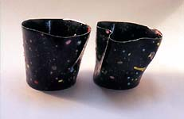
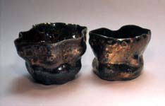
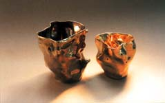
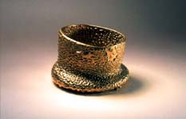

| Georgette
Ore Introduces Rascal Ware

This is the second chapter in a series of articles by Don Pilcher
on some of the characters that have been inspiring him and helping
him with creating his ceramic works. Feedback is welcome: Don Pilcher:
.
Georgette Ore and Rascal Ware - Chapter 2
The
question is still open. Some people think Rascal Ware is the artistic
product of a deep affection…but others believe that the better
word is infection. So there was some uncertainty when the staff
met to plan our first public exhibition. Present were Junior Bucks,
the owner; Mosley Bunkham, the business manager; Don Pilcher, the
other potter; Shakespeare, the shop dog; and yours truly.
We discussed our project for hours. Junior kept repeating how important
this event was. Pilcher talked endlessly about all the ceramic stuff
he knows…emphasis on endlessly. He’s a retired professor
and it’s as if he thinks and speaks in fifty minute blocks
of time. When he comes to certain subjects, like deflocculated kaolin
and engobes, his speech quickens and he breaks out in perspiration
on his upper lip. What a load.
Mosley doesn’t say much because he’s new. But when
he screws up he always covers with this, “The sun don’t
shine on the same dog’s ass every day.” That passes
for philosophy around here. About Shakespeare; although he has a
large receptive vocabulary, he doesn’t say anything either…
naturally. It’s too ironic. They should have named him Harpo.
I hate irony.
That’s five males and it makes me the only woman here. Honest
to god, some days I look up from the wheel and all I can see are
bricks and dicks. This is not an easy environment since we all live
and work in that small, dark space between Pilcher’s ears.
That’s a load also.

Pilcher said we could knock this show out in three weeks. He suggested
one clay, two throwers (him and me), three glazes and four shapes;
bowls, plates, jars and vases. Yuck! He also noted that wood firing
was very hot right now. I’m not sure he got the pun. Sad.
I told him “Wood fire’s plenty fine, but not all the
fucking time.” It took some doing but I eventually sold them
on this: As a first exhibition we should do something out of Genesis…like
the story about the ark. So we made all the pots in pairs - two
of everything. We included earthenware, bone china, porcelain, lead
glaze, salt glaze, overglaze, underglaze, lusters, oxidation, reduction,
single fire, multifire, overfire. No raku…I hate raku. Junior
said I threw 467 pots in all. He would know.
Which
brings me to the “Thrown Thrown” pair. Junior hums constantly;
usually the old Gershwin standard, Do It Again. It’s
ironic because he has a pretty clear case of obsessive compulsive
disorder. I bought him a book on OCD, which he’ll keep forever
but probably won’t read. In response to his humming, I thought
I’d double throw some pieces, first on the wheel… and
then on the table. Since I was hired at RW to provide the creative
spark, I thought the idea had some merit. And kind of funny too.
Junior didn’t agree and said, to my face, that these pieces
had exceeded anything like a creative spark and were now mired in
a godless trench where they could be rescued only by the ghost of
Peter Voulkos.
I told him these pots were actually in honor of his agreeable ways
and the perfect propitiation of the RW motto- “We’ll
make anything.” Junior bought it. He sees himself as an intellectual
and all you have to do is wrap your argument in a six-dollar word
and he’s yours. It’s kind of sad. But he pays on time
and his check is always good.
In the end, what we have for you is a potter’s primer, an
exhibition for other potters. Our work may be easier to appreciate
when illuminated by a remark Shoji Hamada once made when viewing
a diverse group of pots, “Yes, they are all the same…all
different.” We find his conclusion inscrutable and improbable,
but amazingly potent.
If you want to see more of these Rascal Ware pieces you can go
to the gallery at www.terraincognitostudios.com.
If you want to contact us directly, you can e-mail us at dpilcher2@juno.com.
continue...
About Don Pilcher: American studio potter and author.
Pilcher earned a BFA at the Chouinard Art Institute in Los Angeles
in 1964 and an MFA at the Rhode Island School of Design in 1966.
He taught at the University of Illinois at Urbana-Champaign from
1966-99, where he is now Professor Emeritus. He makes wheel-thrown
and altered functional ware. Images & text ©
Don Pilcher. Contact:
.
Rascal Ware Chapter 1/Español
Rascal Ware Chapter 2/Español
Rascal Ware Chapter 3
Rascal Ware Chapter 4
Rascal Ware Chapter 5
Rascal Ware Chapter 6
More Articles
|
{kind=link}
{kind=link}
{kind=link}
{kind=link}